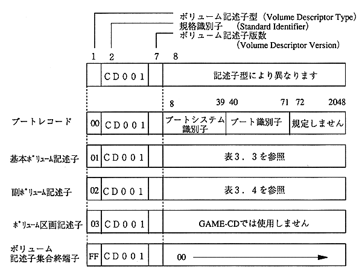

3.2.1 Volume Descriptor Set
There are five types of volume descriptors as follows. Of these, the volume partition descriptor is not used.

Figure 3.3 Volume descriptor
(1) Boot record
Table 3.2 Boot record structure
byte position |
type |
Field name |
Description |
1 |
N |
Volume Descriptor Type |
Volume descriptor type |
 | In normal GAME-CD, the basic volume descriptor and volume descriptor set terminal are 1 sector each. It is recorded one by one. These two sectors must be recorded. |
| | Please use the secondary volume descriptor and boot record after understanding the usage. |